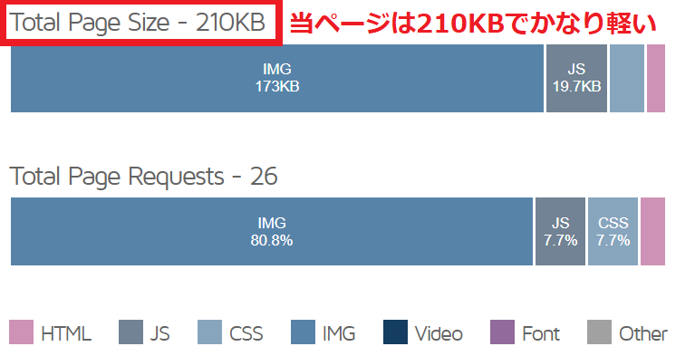
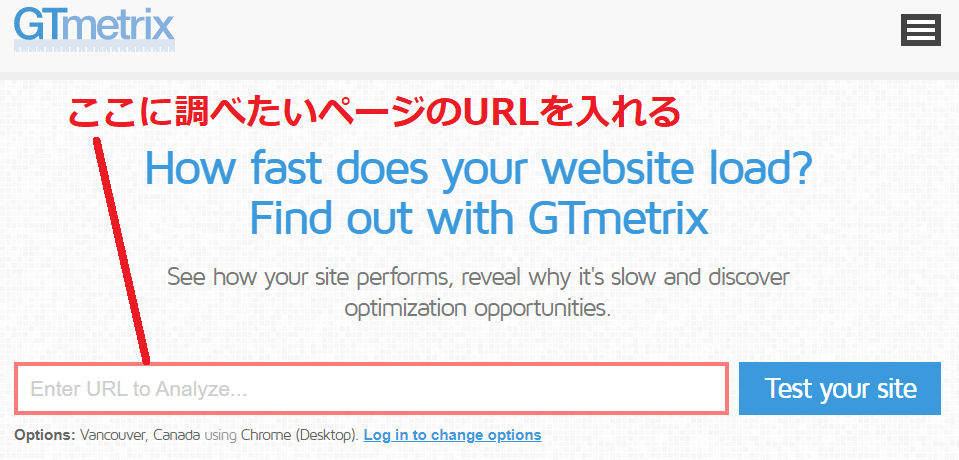
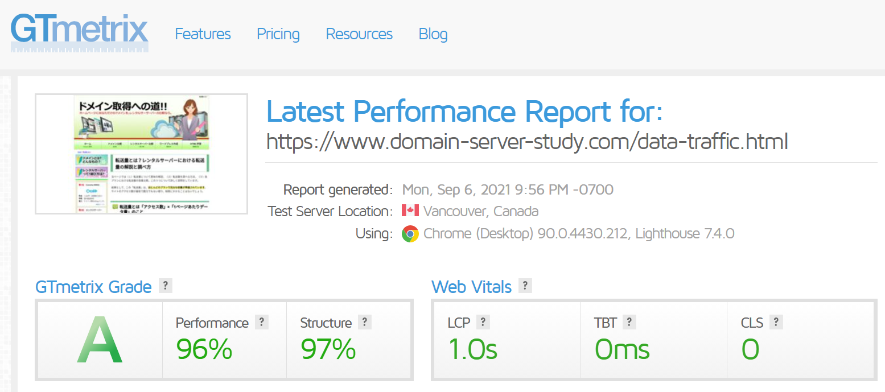
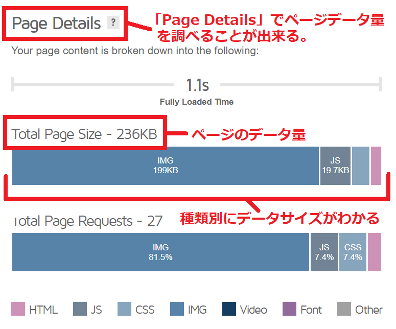

転送量とは？レンタルサーバーにおける転送量の解説と調べ方
当ページでは（１）転送量について意味の解説、（２）転送量を調べる方法、（３）各プランにおける転送量の容量比較。この３つについて詳しく説明をしています。
結果として、この「転送量」は、ほとんどのプランで充分な容量が準備されています。
サイトのアクセス数が最低で数万でもない限り、制限にかかることはないでしょう。
転送量とは「アクセス数」×「1ページあたりデータ量」のこと
転送量は、「アクセス数」?「1ページあたりデータ量」で計算されます。
実際に、当サイトにおける1日あたりの転送量を計算してみましょう。
1日のアクセス数が500あるとします。そして1ページあたりのデータ量が平均1MBだとします。
この場合、1日あたりの当サイトの転送量はどのくらいになるでしょうか。
「500アクセス」×「1MB」＝ 500MB（0.5GB）（1日分の転送量）
計算すると500MBが当サイトの転送量ということになります。
これをGB（ギガバイト）に変換すると0.5GBバイトとなります。
もし、アクセス数が1日に2,500アクセスあれば、1日あたりの転送量は2.5GBになります。
「2,500アクセス」×「1MB」＝ 2,500MB（2.5GB）（1日分の転送量）
このような計算方法で、サイトの転送量が決まっています。
1日1万アクセスあっても転送量には問題なし
仮に1日1万アクセスあるホームぺージがあるとします。
1ページあたりのデータ量を1MBだとすると、転送量は「10,000アクセス」×「1MB」＝10,000MBとなります。
GB（ギガバイト）に変換すると10GBになります。
「10,000アクセス」×「1MB」＝ 10GB（1日分の転送量）
エックスサーバーでは1日あたりの転送量が70GB迄となっているので、1日で10GBを使っても、60GBも余ることになります。
そのため、1万アクセスあっても転送量に影響が出ることはほぼありません。
プラン選びにおいて、転送量は気にしないでも良い要素と言って良いでしょう。
当サイトの1ページあたりのデータ量はわずか210KB
今回、1ページあたりのデータ量を1MBとして計算していますが、実際のホームぺージにおいては
どのぐらいのデータ量になっているでしょうか。
海外の調査サイトであるGTmetrixを使ってみます。
当サイトの場合はHTMLで作っている静的サイトのためデータ容量は軽く、このページについてはわずか210KBとなっています。

ワードプレスの１ページあたりデータ量は大体1MB～3MB
実際には、ワードプレスを作る方が多いと思いますので、ワードプレスにおける1ページあたりのデータ容量についても調べました。
ワードプレスで構築されていそうなサイトを5つほど調べたところ、大体1MB～3MBの範囲になりました。
調査したページはメインページではなく、記事ページになっています。
結果、素材のデータ量が大きな割合になっているところもあれば、
意外にもJavascriptのデータ量が素材データよりも大きくなっているページも半数近くありました。
これは、企業が作っているサイトも入れたため、多くのJavascriptが導入されているからだと思います。
体感的に、1人で作る一般的なワードプレスサイトであれば、1ページあたりのデータ量は1MB～2MBぐらいになるのではないかと予想します。
１ページあたりデータ量が2MBでも、1万アクセスは制限範囲内
仮に1ページのデータ量が2MBで、アクセス数を1万とした場合でも、1日の転送量は合計20GBしかなりません。
エックスサーバーでは1日70GBまで受け付けてくれますので、これでも50GBの空きがあります。
転送量（データ量）を調べる方法
データ量を調べるには海外の調査サイトを活用します。
サイト全体のデータ量を調べることも出来ますし、1ページごとのデータ量を調べることも出来ます。
１ページあたりの転送量を調べる方法
GTmetrixはサイト表示やデータ量など、様々な調査が簡単に出来るWebサービスになります。
サイトに入ったら調べたいページのURLを入れましょう。
データサイズやサイト表示の時間についてだけであれば、無料版のサービスで調べられます。

1分ぐらい待つと、結果が表示されます。最初に出てくる画面についてはページデータ量ではないので、こちらは確認をしなくても問題ありません。

「Page Details」の部分にページ量の内容が載っています。
IMGは素材データ。JsはJavascriptのデータ、HTMLはHtmlのデータ量など種類別に確認することが出来ます。

サイト全体の転送量を調べる方法
サイト全体の転送量を調べるには、レンタルサーバーに付属しているアクセス解析を活用します。
例えばエックスサーバーではログイン後に、該当ドメインにおいて「アクセス解析」を作成、 アクセス解析の管理画面にて「転送量」をクリックすることでサイト全体のデータ量を調べることができます。 （アクセス解析がついているレンタルサーバーの場合）
レンタルサーバー各プラン・転送量の比較
各社レンタルサーバーの転送量制限について表にまとめてみました。
「ConohaWing」と「お名前」については月単位で公表しているため、1日あたりの数値に直しています。
ベストエフォート型の転送量無制限サーバーについても、混雑時にはサイト表示速度が遅くなることもあります。
まとめ
転送量に注意する場合は、それなりにアクセス数があるホームページとなります。
一般的に500円未満の格安レンタルサーバーであれば1日に3,000アクセス。
1,000円～1,500円のレンタルサーバーであれば1万アクセスが転送量制限にひっかかる
基準となっているような気がしています。
ニュースサイトなどアクセス数が集まりやすい分野での媒体を作る場合。
1日あたり50GBを超える転送量が確保されているレンタルサーバーを選ぶことをおすすめします。
この記事の著者・プロフィール
Web制作を始めて約19年になります（HTML/css、Photoshop、Webマーケティング）。2005年から当サイトの運営を開始。
これまでに300個以上のドメインを取得、10社を超えるレンタルサーバーを利用してきました。